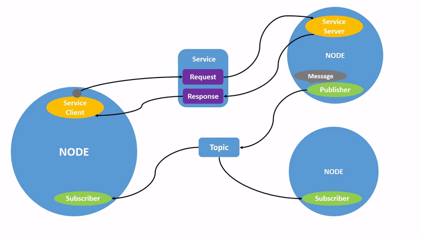

<!DOCTYPE lake>
<h1 data-lake-id="Jvsay" id="Jvsay"><span data-lake-id="u16a70a2a" id="u16a70a2a">节点</span></h1><p data-lake-id="u435762d8" id="u435762d8"><span class="lake-fontsize-12" data-lake-id="u4317b357" id="u4317b357">ROS 中的每个节点都应该负责单一的、模块化的目的，例如控制车轮马达或发布来自激光测距仪的传感器数据。每个节点都可以通过主题、服务、操作或参数从其他节点发送和接收数据。</span></p><p data-lake-id="u8bb490c9" id="u8bb490c9"></p><p data-lake-id="u0c64bc96" id="u0c64bc96"><span class="lake-fontsize-12" data-lake-id="ueb3da9f2" id="ueb3da9f2">一个完整的机器人系统由许多协同工作的节点组成。在 ROS 2 中，单个可执行文件（C++ 程序、Python 程序等）可以包含一个或多个节点。</span></p><h1 data-lake-id="cg6CD" id="cg6CD"><span data-lake-id="u7b825582" id="u7b825582" style="color: rgb(51, 51, 51)">节点任务</span></h1><h2 data-lake-id="y0xVx" id="y0xVx"><span data-lake-id="u34414a72" id="u34414a72" style="color: rgb(51, 51, 51)">1. 运行节点</span></h2><span class="yuque-card-unsupported">[codeblock]</span><p data-lake-id="u9200daac" id="u9200daac"><span class="lake-fontsize-12" data-lake-id="u57a981ff" id="u57a981ff">例如：</span></p><ul list="uc29478a0"><li data-lake-id="ube679477" fid="u879b02f0" id="ube679477"><code data-lake-id="u609c9b9b" id="u609c9b9b"><span data-lake-id="u07511900" id="u07511900">ros2 run turtlesim turtlesim_node</span></code><span data-lake-id="uf0cc70a5" id="uf0cc70a5">运行小乌龟节点</span></li><li data-lake-id="u9b337433" fid="u879b02f0" id="u9b337433"><code data-lake-id="u5928aad5" id="u5928aad5"><span data-lake-id="ud3edf107" id="ud3edf107">ros2 run rviz2 rviz2</span></code><span data-lake-id="uc600df3d" id="uc600df3d">运行可视化界面</span></li></ul><h2 data-lake-id="Tr3Tr" id="Tr3Tr"><span data-lake-id="ufc67011c" id="ufc67011c" style="color: rgb(51, 51, 51)">2. 获取节点列表</span></h2><span class="yuque-card-unsupported">[codeblock]</span><h2 data-lake-id="V0HWg" id="V0HWg"><span data-lake-id="u07d1fd1e" id="u07d1fd1e" style="color: rgb(51, 51, 51)">3. 获取节点信息</span></h2><span class="yuque-card-unsupported">[codeblock]</span><p data-lake-id="u1b3266ba" id="u1b3266ba"><span data-lake-id="u287ce2ff" id="u287ce2ff">系统内置的节点都在如下目录：</span><code data-lake-id="ucb078748" id="ucb078748"><span data-lake-id="ud5f801c6" id="ud5f801c6">/opt/ros/humble/lib</span></code></p><p data-lake-id="u6c52118d" id="u6c52118d"><span data-lake-id="u3b4a4a71" id="u3b4a4a71">例如：</span><code data-lake-id="uaaa6cef3" id="uaaa6cef3"><span data-lake-id="u0023d693" id="u0023d693">ros2 node info /turtlesim</span></code><span data-lake-id="u46eeab70" id="u46eeab70"><br/></span><span data-lake-id="ua3a63e4e" id="ua3a63e4e"> </span></p>